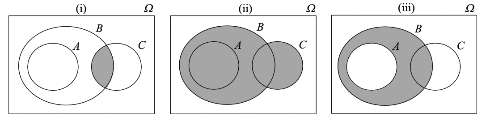
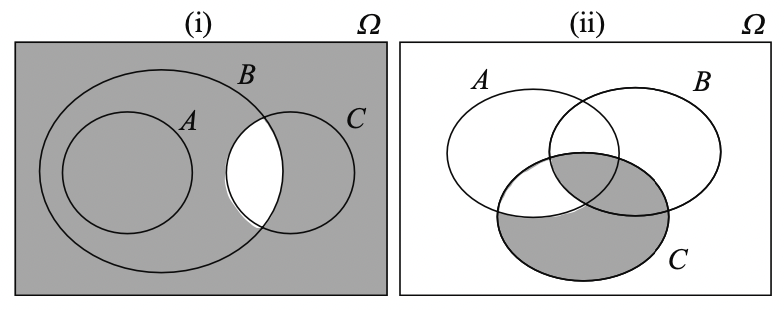
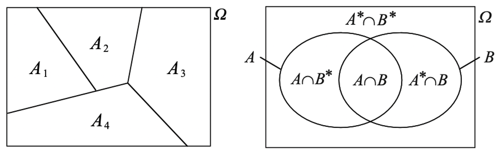
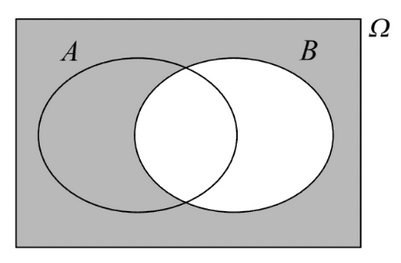
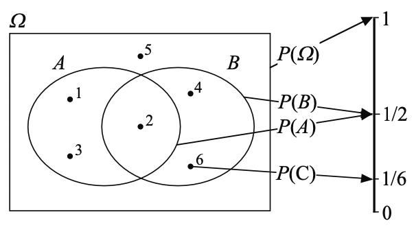
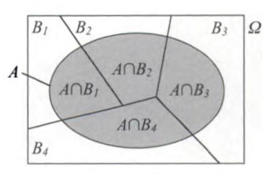
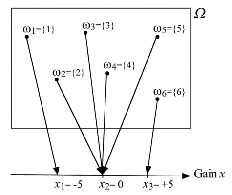
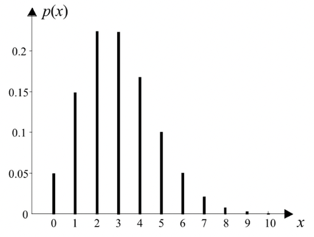
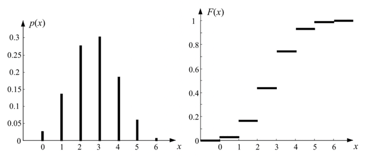

Probability & statistics#
“Probability deals with knowing the model of our world and use it for deductions. Statistics deal with trying to identify this model based on observation of reality.”
Warning
This chapter is under construction.
Environment setup#
import platform
import torch
# Print environment info
print(f"Python version: {platform.python_version()}")
print(f"PyTorch version: {torch.__version__}")
Python version: 3.11.1
PyTorch version: 2.2.1
Fundamentals#
Random experiment (a.k.a. trial)#
Experiment implying some randomness. Knowing the experimental conditions is not enough to predict its outcome. Opposite of deterministic experiment.
Example: throwing a 6-sided dice.
Sample space#
Set of all possible outcomes for the random experiment, also called universe of the random experiment. Denoted by \(\Omega\) or \(S\). Can either be finite or infinitely large.
Example: \(\Omega = \{1,2,3,4,5,6\}\).
Event#
An event \(A\) is a subset of the sample space: \(A \subseteq \Omega\).
\(\Omega\) is the certain event. \(\emptyset\) is the impossible event.
An event is a set of elementary events. An elementary event \(\omega \in \Omega\) is an observed outcome of the random experiment. If \(\omega \in A\), then event \(A\) has occurred.
Example: \(A \equiv \text{"obtaining an odd number"}\). \(A= \{1,3,5\}\).
Relationships between events#
Inclusion \(A \subset B\). If \(A\) occurs, \(B\) occurs too.
Equality \(A = B\). All elements are identical for both events.
Incompatibility (no shared elements). The events cannot occur simultaneously.
Example: \(A \equiv \text{"obtaining an odd number"}\) and \(B \equiv \text{"obtaining an even number"}\) are incompatible.
Composition of events#
Negation \(A^\star = \Omega \backslash A\) (\(\Omega\) minus \(A\)). Occurs if and only if \(A\) does not occur.
Conjunction \(A \cap B\). Occurs if and only if \(A\) and \(B\) occur simultaneously.
Union \(A \cup B\). Occurs if either \(A\) or \(B\) occurs.
Generalization to \(n\) events:
\(\bigcap_{i=1}^{n} A_i = A_1 \cap A_2 \cap \cdots \cap A_n\) (All \(A_i\) events occured simutaneously)
\(\bigcup_{i=1}^{n} A_i = A_1 \cup A_2 \cup \cdots \cup A_n\) (At least one of the \(A_i\) events occurred)
\((\bigcap_{i=1}^{n} A_i) \subseteq (\bigcup_{i=1}^{n} A_i)\)
Example: \(A \equiv \text{"obtaining an odd number"}\). \(A^\star = \{2,4,6\}\).
Example: Venn diagrams for event composition#

(i): \(B \cap C\)
(ii): \(B \cup C\)
(iii): \(A^\star \cap B\)
Event algebra#
Idempotency: \(A \cup A = A\) and \(A \cap A = A\)
Commutativity: \(A \cup B = B \cup A\) and \(A \cap B = B \cap A\)
Associativity: \((A \cup B) \cup C = A \cup (B \cup C) = A \cup B \cup C\) and \((A \cap B) \cap C = A \cap (B \cap C) = A \cap B \cap C\)
Distributivity: \((A \cup B) \cap C = (A \cap C) \cup (B \cap C)\) and \((A \cap B) \cup C = (A \cup B) \cap (B \cup C)\)
Identities : \(A \cup \emptyset = A\), \(A \cup \Omega = \Omega\), \(A \cap \emptyset = \emptyset\) and \(A \cap \Omega = A\)
Complementarity: \(A \cup A^* = \Omega\), \(A \cap A^* = \emptyset\), \((A^*)^* = A\), \(\emptyset^* = \Omega\) and \(\Omega^* = \emptyset\)
De Morgan laws:
\((A \cup B)^* = A^* \cap B^*\) and \((A \cap B)^* = A^* \cup B^*\)
\((\bigcup_{i=1}^{n} A_i)^\star = \bigcap_{i=1}^{n} A_i^\star\) and \((\bigcap_{i=1}^{n} A_i)^\star = \bigcup_{i=1}^{n} A_i^\star\)
Example: Venn diagrams for events algebra#

(i): \((B \cap C)^\star = B^\star \cup C^\star\)
(ii): \(((A \cap B^\star) \cup C^\star)^\star = (A^\star \cap C) \cup (B \cap C)\)
Event partition#
An event set \(\{ A_1, \dots, A_n \}\) is a partition of the sample space if and only if:
No event is impossible: \(\forall i, A_i \ne \emptyset\)
Events are incompatible two by two: \(\forall i \ne j, A_i \cap A_j = \emptyset\)
Union of all events is equal to the sample space: \(\bigcup_{i=1}^{n} A_i = \Omega\)

Combination of random experiments#
For two joint experiments characterized by sample spaces \(\Omega_1\) and \(\Omega_2\), we can define a new sample space \(\Omega\) as their cartesian product: \(\Omega = \Omega_1 \times \Omega_2\)
Example for rolling two 6-sided dices: \(\Omega_1 = \Omega_2 = \{1,2,3,4,5,6\}\) and \(\Omega = \{(1,1), (1,2), \dots, (6,5), (6,6) \}\) (36 couples).
Probability basics#
Probability of an event#
Classical definition#
“The probability of an event is the ratio of the number of cases favorable to it, to the number of all cases possible when nothing leads us to expect that any one of these cases should occur more than any other, which renders them, for us, equally possible.” (Laplace, 1819)
Assumes a finite number of cases and equiprobability between them.
Example: throwing dices#
Throwing a 6-sided dice. \(\Omega = \{1,2,3,4,5,6\}\). \(A \equiv\) “obtaining 5”.
Throwing two 6-sided dices and summing their values. \(\Omega = \{2,3,\dots,12\}\). \(A \equiv\) “obtaining 5”.
With \(A' = \{(1,4), (2,3), (3,2), (4,1)\}\) and \(\Omega'=\{(1,1), (1,2), \dots, (6,6)\}\)
Frequentist definition#
For \(n\) repetitions under the same conditions of a random experiment, \(P(A)\) is the theorical frequency of event \(A\).
Assumes the possibility of indefinitely repeating an experiment without changing its conditions.
Axiomatic definition#
A probability is a number that satisfies the following axioms (Kolmogorov, 1933):
For any event \(A\), \(P(A) \ge 0\)
\(P(\Omega) = 1\)
If events \(A\) and \(B\) are incompatible (\(A \cap B = \emptyset \)), then \(P(A \cup B) = P(A)+P(B)\)
Properties of probabilities#
The previous definition has the following consequences:
\(P(\emptyset) = 0\)
\(P(A) \le 1\)
\(P(A^*) = 1 - P(A)\)
If \(\forall i \ne j, A_i \cap A_j = \emptyset\), then \(P(\bigcup_{i=1}^{n} A_i) = \sum_{i=1}^{n} P(A_i)\)
\(P(A \cup B) = P(A) + P(B) - P(A \cap B)\)
In the general case, \(P(\bigcup_{i=1}^{n} A_i) \le \sum_{i=1}^{n} P(A_i)\)
Conditional probability#
The probability \(P(A|B)\) of event \(A\) knowing that event \(B\) has occurred is given by:

There is no fundamental difference between conditional and non-conditional probabilities: \(P(A) = P(A|\Omega)\)
Example: throwing a 6-sided dice#
\(A \equiv\) “result is \(\leq\) 3”, \(B \equiv\) “result is even”, \(C \equiv\) “result = 6”.

\(P(A) = P(B) = \frac{1}{2}\) even though \(A \neq B\).
\(P(A|B) = \frac{P(A \cap B)}{P(B)} = \frac{1}{3}\).
Properties of conditional probabilities#
The previous definition has the following consequences:
\(P(\Omega|B) = 1\)
\(P(\emptyset|B) = 0\)
\(P(A^*|B) = 1 - P(A|B)\)
If \(\forall i \ne j, A_i \cap A_j = \emptyset\), then \(P(\bigcup_{i=1}^{n} A_i|B) = \sum_{i=1}^{n} P(A_i|B)\)
\(P((A \cup C)|B) = P(A|B)+P(C|B)-P((A \cap C)|B)\)
If \(B \subset A\), \(P(A|B) = 1\)
If \(A \subset B\), \(P(A|B) = \frac{P(A)}{P(B)} \ge P(A)\)
Fundamental probability laws#
General product rule (a.k.a. chain rule)#
\(P(A \cap B) = P(A|B)P(B)\)
More generally, for any events \(A_1, A_2,\dots,A_n\):
Law of total probability#
If the set of events \(\{B_1, B_2, \dots, B_n\}\) is a partition of \(\Omega\), then:

Bayes’ theorem#
For any two events \(A\) and \(B\):
If the set of events \(\{B_1, B_2, \dots, B_n\}\) is a partition of \(\Omega\), then:
\(P(B_i)\) is the prior probability (known before the random experiment). \(P(B_i|A)\) is the posterior probability.
The \(B_i\) events can be seen as the possible causes responsible for the occurrence of \(A\).
Independance between events#
For any two events \(A\) and \(B\):
For any events \(A_1,\dots,A_n\):
Conditional independance#
For any three events \(A\), \(B\) and \(C\):
Independance between trials#
Two experiments characterized by sample spaces \(\Omega_1\) and \(\Omega_2\) are independant if and only if:
Example : throwing a 6-sided dice twice#
\(A_i \equiv\) “obtaining number \(i\) at first throw”, \(B_j \equiv\) “obtaining number \(j\) at second throw”.
Random variables#
Definition#
A random varialbe \(X\) is an application from \(\Omega\) to \(\mathbb{R}\) that associates a value \(x=X(\omega) \in \mathbb{R}_X\) to each elementary event \(\omega \in \Omega\).
\(\mathbb{R}_X \subseteq \mathbb{R}\) is called the variation domain of \(X\).
Example: throwing a 6-sided dice#
The financial gain can be defined as a random variable \(X\).
\(\mathbb{R}_X = \{-5,0,5\}\)

Discrete random variables#
Probability function#
It associates to each value \(x\) the probability \(p(x)\) that the random variable \(X\) takes this value.
Example 1: throwing a 6-sided dice twice (followup)#
\(x\) |
\(-5\) |
\(0\) |
\(5\) |
|---|---|---|---|
\(p(x)\) |
\(\frac{1}{6}\) |
\(\frac{2}{3}\) |
\(\frac{1}{6}\) |
Example 2: number of major earthquakes in a century#

Distribution function#
\(F(x)\) is a monotonically increasing “staircase” function.

Bernoulli’s law#
We only consider the occurence (or lack thereof) of an event \(A\), given by its probability \(p = P(A)\).
The random variable \(X\) associating \(1\) to the occurence of \(A\) and \(0\) otherwise is called Bernoulli’s law.
Binomial law#
A Bernoulli trial is repeated several times.
If \(Y_i \sim \dots \sim Y_n \sim Be(p)\) with \(Y_1 \perp \dots \perp Y_n\), then:
Hypergeometric law#
The binomial law describes the probability of \(x\) successes (random draws for which the object drawn has a specified feature) in \(n\) draws with replacement.
In contrast, the hypergeometric law describes the probability of \(x\) successes in \(n\) draws without replacement, from a finite population of size \(N\) that contains exactly \(k\) objects with that feature. As such, there is no independance between the successive results of the \(n\) Bernoulli trials.
When \(N \gg n\), it can be approximated by \(Bi(n, k / N)\).
Geometric law#
This law describes the probability of obtaining a first success when repeating independant Bernoulli trials.
Appendices#
Combinations#
# https://www.tensorflow.org/guide/tensor
# https://pytorch.org/tutorials/beginner/basics/tensorqs_tutorial.html
# https://en.wikipedia.org/wiki/Event_(probability_theory)
# https://devmath.fr/tools/latex-symbols-list/#
#